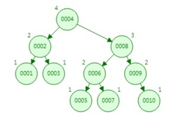
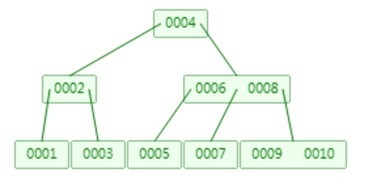
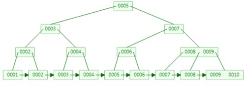

常见的索引类型
哈希索引、平衡二叉树索引、B树索引、B+树索引以下对这几类常见索引进行分析
哈希索引
优点
哈希索引拥有极高的检索效率，索引的检索可以一次到位
缺点
- 不能使用范围查询
Hash索引仅仅能满足”=”,”IN”和”<=>”查询(注意<>和＜＝＞是不同的操作），不能使用范围查询，例如WHERE price > 100。由于Hash索引比较的是进行Hash运算之后的Hash值，所以它只能用于等值的过滤，不能用于基于范围的过滤 - Hash索引不能利用部分索引键查询
这个场景主要出现在复合索引，Hash索引在计算Hash值的时候，是组合索引键合并后再一起计算Hash值，而不是单独计算Hash值，所以通过复合索引的前面一个或几个索引键进行查询的时候，Hash索引也无法被利用 - Hash索引在任何时候都不能避免表扫描
Hash索引是将索引键通过Hash运算之后，将 Hash运算结果的Hash值和所对应的行指针信息存放于一个Hash表中。由于不同索引键存在相同Hash值（哈希碰撞），所以无法从Hash索引中直接完成查询，还是要通过访问表中的实际数据进行相应的比较，并得到相应的结果
平衡二叉树
描述
又称 AVL树。 它除了具备二叉查找树的基本特征之外，还具有一个非常重要的特点：它的左子树和右子树都是平衡二叉树，且左子树和右子树的深度之差的绝对值（平衡因子 ）不超过1。也就是说AVL树每个节点的平衡因子只可能是-1、0和1（左子树高度减去右子树高度）

缺点
- 树的高度越高，查找速度越慢
- 支持范围查找，但是需要进行回旋查找
B树索引

描述
B树和二叉树最大的区别在于：它一个节点可以存储两个值，这就意味着它的树高度，比二叉树的高度更低，它的查询速度就更快
缺点
在范围查找的时候，存在回旋查询的问题。同样order by排序的时候效率也很低，因为要把树上的数据手动排序一遍
B+树

描述
是B树的升级版，B+树相比B树，新增叶子节点与非叶子节点关系。叶子节点中包含了key和value，key存储的是1-10这些数字，value存储的是数据存储地址，非叶子节点中只是包含了key，不包含value。所有相邻的叶子节点包含非叶子节点，使用链表进行结合，有一定顺序排序，从而范围查询效率非常高